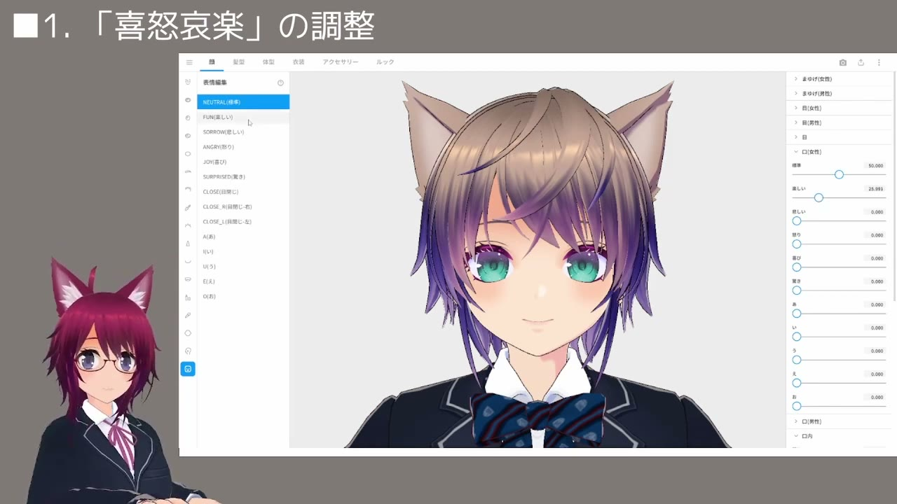
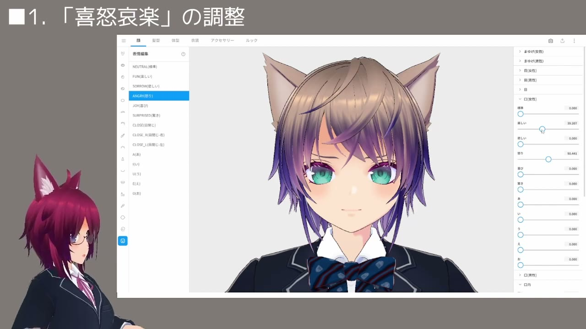
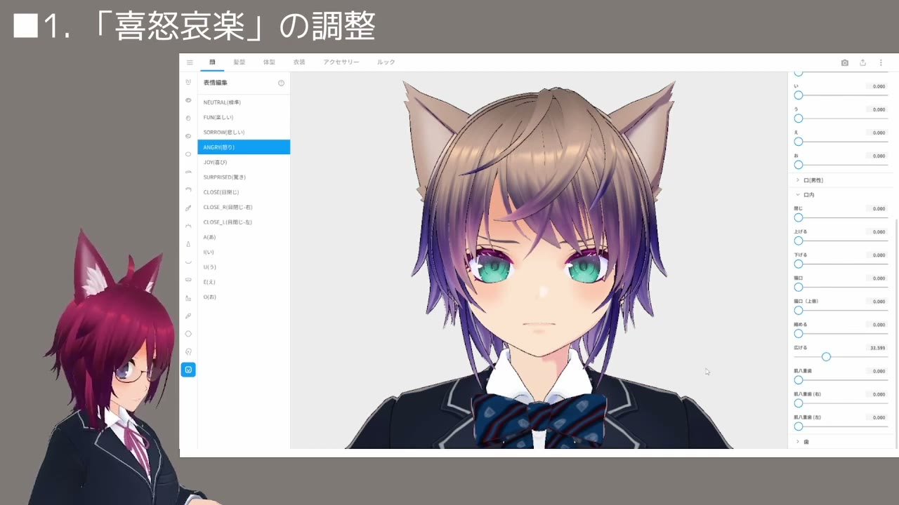
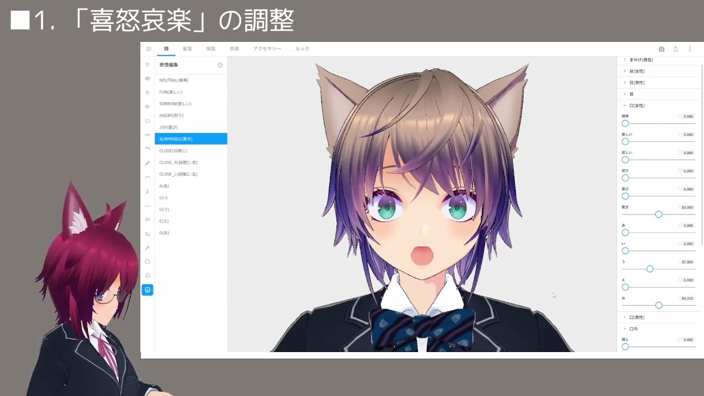
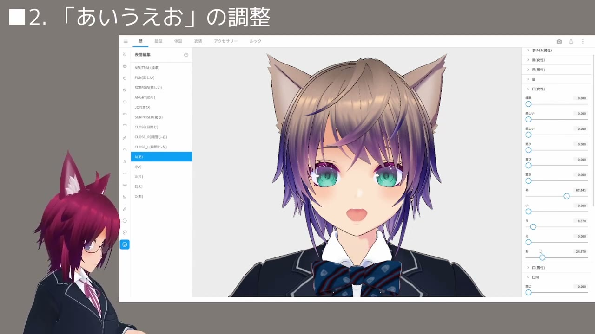
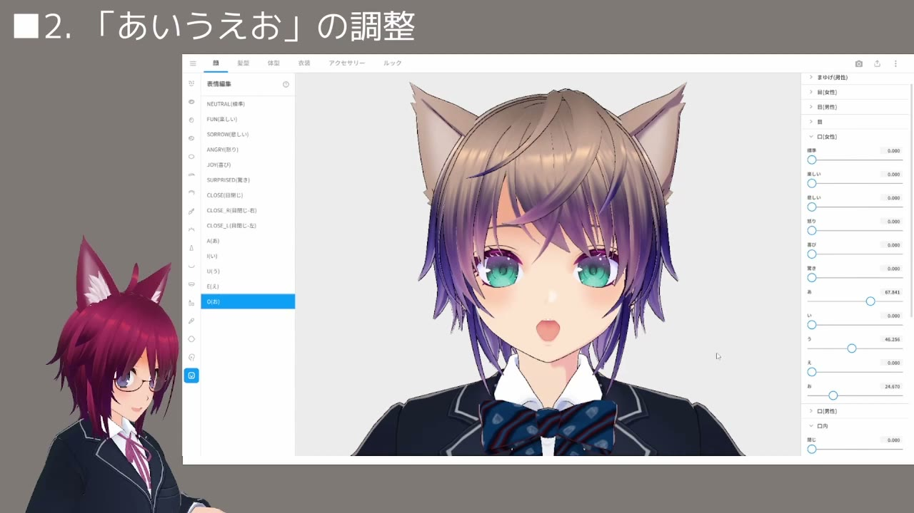
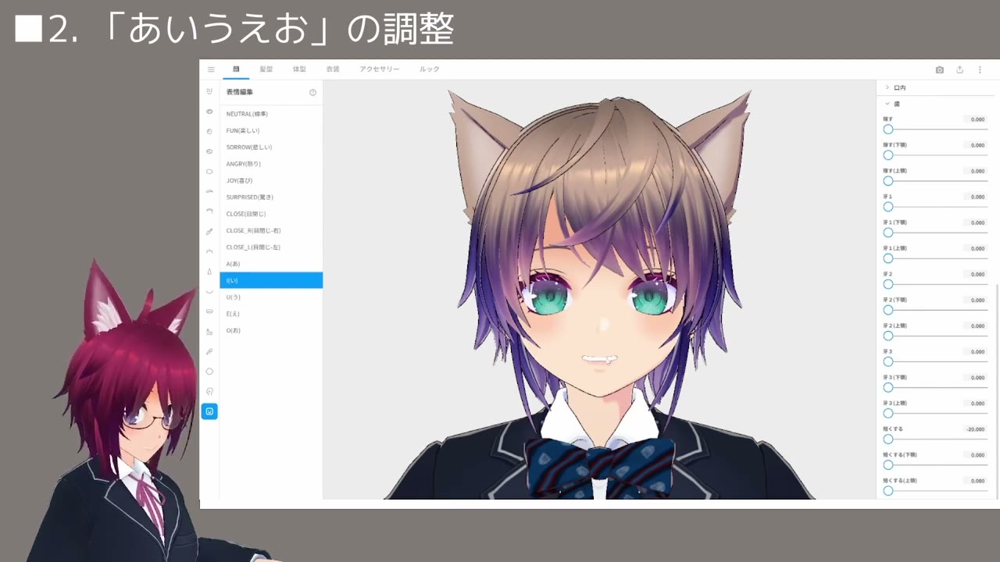
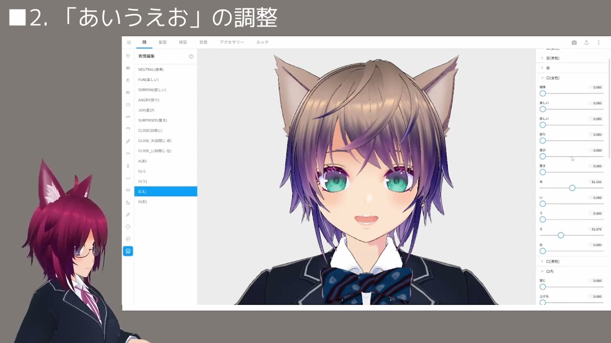
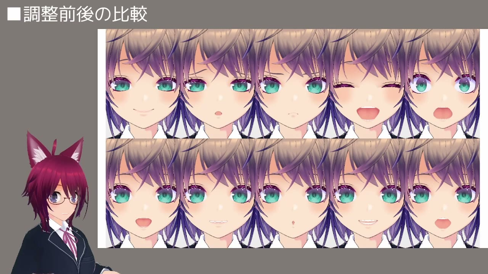

鼻与嘴
口元收自然：闭嘴和张嘴分开调
打开表情编辑
章节条写着「1. 「喜怒哀楽」の調整」。口播说表情编辑在顔编辑页的最下面。画面上左侧竖栏最底下的图标亮着，面板标题就是表情編集。列表从上到下是 NEUTRAL(標準)、FUN(楽しい)、SORROW(悲しい)、ANGRY(怒り)、JOY(喜び)、SURPRISED(驚き)，然后是目閉じ和左右目閉じ，再往下是 A(あ)、I(い)、U(う)、E(え)、O(お)。口播把第一项说成 NATURAL（標準），列表上写的是 NEUTRAL(標準)。口播说这次眼部保持原样，主要调口元；女性型角色就开「口（女性）」。这一帧右侧的口(女性)、口(男性)、口内、歯都还合着。眉毛和眼睛的组也合着。这一集没有打开鼻子。
预设口形先收到一半
口播要把 NEUTRAL 到 SURPRISED 里已经写好的口参数全部改成一半，先把标准设成 50，再把 50 复制到后面几项。这两张画面上，標準从 100.000 收到 50.000，下面各行仍是 0.000。复制这个动作画面上没有出现。口播说只做这一步，表情就会收敛一些，VRoid 味会轻一点，但还不够，接着再按闭嘴和张嘴分开微调。后面能读成刚好 50.000 的，是惊喜里的驚き、喜悦里的喜び。愤怒停下时怒り是 50.441，悲伤停下时悲しい是 52.203。
闭嘴：标准、开心、生气
标准脸上加一点楽しい

口播说闭嘴表情用三项一起配：这个表情自己的口参数、楽しい，再加上口内的縮める和広げる。这一次只在標準上加一点楽しい。画面上標準留在 50.000，楽しい拉到 25.991，嘴仍闭着，笑意比只留一半标准时明显一点。
开心只动楽しい
口播说开心这张自己已经在用楽しい，所以要去调楽しい以外的项，并用縮める找平衡。紧接着又说，这一次不做縮める，只留楽しい这一下。停下时口内组是合着的，画面上能读到的是楽しい 35.903，眼睛睁着，嘴是浅笑。
生气先拉平，再用口内広げる


口播说生气的预设太满，加上楽しい以后嘴会拉直，变成有点闷的样子；再用口内的広げる，可以做成更用力的「ム～ッ」。上一张还停在口(女性)，光标在楽しい上，39.207，怒り是 50.441，嘴已经接近一条平线。下一张换到口内，広げる拉到 32.599，縮める仍是 0.000。口播说这次就用这个。
张嘴：惊讶、喜悦、悲伤
惊讶混入う和お

口播说张嘴的形用悲しい，或者あいうえお里的う、お来掺。惊讶这张是把う和お加进去。画面上驚き留在 50.000，う拉到 37.005，お是 50.220，嘴张成圆口，眼睛睁大。
喜悦混入悲しい
口播说喜悦可以混悲しい、う或お，这次选悲しい。混进去以后，悲伤这个参数看起来会变成另一种嘴。这一帧悲しい 31.718，喜び 50.000，う和お都是 0.000。眼睛闭上，嘴是张开的笑。
悲伤把嘴做小
口播说悲伤同样是在悲しい上混一点う和お，这次要把嘴做得小一点。画面上悲しい是 52.203，う 23.348，お 9.692，嘴只开一条小缝。口播说到这里，和初始设定不同的喜怒哀乐就做完了。
あいうえお
章节条换成「2. 「あいうえお」の調整」。口播说思路是先做あ、い、う，お取あ和う的中间，え取あ和い的中间。实际动手的顺序是あ、う、お，然后再做い和え。
あ收着，再混う和お

口播说あ不要按预设原样用，先收着，再混う和お。这一帧あ停在 67.841，う 8.370，お 24.670，嘴是轻轻张开的椭圆。
う不原样，混一点お和あ
口播说う同样不要原样用，往里加一点お和あ。画面上う是 72.247，あ 14.097，お 29.515，嘴收成较小的圆口。
お先抄あ的数字，再加う

口播说お要做成あ和う的中间，先把あ的参数移过来，让あ和お变成同一个形，再加一点う。这一帧あ 67.841、お 24.670，和前面あ停下时那一组相同，う加到 46.256，嘴比あ更圆一点。口播接着说把表情按あ、お、う的顺序切着看，没有违和就可以。口播说的「一点」，画面上う的读数是 46.256。
い留着原参数，用縮める收宽度
口播说い的嘴形很有特点，参数就留着；它太宽，用口内的縮める收到合适的长度。画面上い仍是 100.000，縮める拉到 33.040，広げる是 0.000，嘴比一条拉开的横线更短。
想再露齿，就把歯的短くする设到 -20

口播说还想多露一点牙时，就在这个状态上再加一点あ，牙缝会露出来；然后打开歯，把短くする用直接输入设到大约 -20，缝会被补上。加あ的那一下不在这两张画面上。这一张已经滚到歯，短くする的读数是 -20.000，下颚和上颚两行仍是 0.000。脸上的牙缝是合上的。
え以あ为底，再用縮める收宽度

口播说え原样用会太有特征，先以あ为底，再混い或え。纵幅要比あ收敛，横幅不要宽过い，口内縮める只加一点。上一张あ是 51.101，え是 32.276，え低于あ，嘴是微张的浅笑。下一张去收横宽，縮める 19.383，広げる仍是 0.000。口播说再按あ、え、い的顺序切着看，没有违和，あいうえお就做完了。
调整前后放在一起看

口播说和调整前比，口元看起来沉稳了一些，表情设置的讲解到这里结束，初心者课程的脸也做到这里。上面那张收过的闭嘴，是 NEUTRAL(標準) 里標準 50.000 再加楽しい 25.991 的结果。口播接着说可以到拍摄模式摆姿势，或者导出 VRM，拿到能读 VRM 的工具里动一动。拍摄模式和导出这两步，在这张对照图上还没出现。